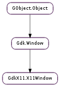

| static | foreign_new_for_display(display, window) |
| static | get_desktop(window) |
| static | move_to_desktop(window, desktop) |
| get_xid() | |
| lookup_for_display(window) | |
| move_to_current_desktop() | |
| set_frame_extents(left, right, top, bottom) | |
| set_frame_sync_enabled(frame_sync_enabled) | |
| set_hide_titlebar_when_maximized(hide_titlebar_when_maximized) | |
| set_theme_variant(variant) | |
| set_user_time(timestamp) | |
| set_utf8_property(name, value) |
None
None
Bases: Gdk.Window
| Parameters: |
|
|---|---|
| Returns: | a Gdk.Window wrapper for the native window, or None if the window has been destroyed. The wrapper will be newly created, if one doesn’t exist already. |
| Return type: |
Wraps a native window in a Gdk.Window. The function will try to look up the window using GdkX11.X11Window.lookup_for_display () first. If it does not find it there, it will create a new window.
This may fail if the window has been destroyed. If the window was already known to GDK, a new reference to the existing Gdk.Window is returned.
| Parameters: | window (Gdk.Window) – a Gdk.Window |
|---|---|
| Returns: | the current workspace of window |
| Return type: | int |
Gets the number of the workspace window is on.
| Parameters: |
|
|---|
Moves the window to the given workspace when running unde a window manager that supports multiple workspaces, as described in the Extended xlib.Window Manager Hints.
| Returns: | the ID of drawable ‘s X resource. |
|---|---|
| Return type: | int |
Returns the X resource (window) belonging to a Gdk.Window.
| Parameters: | window (int) – an XLib Window |
|---|---|
| Returns: | the Gdk.Window wrapper for the native window, or None if there is none. |
| Return type: | Gdk.Window |
Looks up the Gdk.Window that wraps the given native window handle.
Moves the window to the correct workspace when running under a window manager that supports multiple workspaces, as described in the Extended xlib.Window Manager Hints. Will not do anything if the window is already on all workspaces.
| Parameters: |
|---|
Newer GTK+ windows using client-side decorations use extra geometry around their frames for effects like shadows and invisible borders. xlib.Window managers that want to maximize windows or snap to edges need to know where the extents of the actual frame lie, so that users don’t feel like windows are snapping against random invisible edges.
Note that this property is automatically updated by GTK+, so this function should only be used by applications which do not use GTK+ to create toplevel windows.
| Parameters: | frame_sync_enabled (bool) – whether frame-synchronization should be enabled |
|---|
This function can be used to disable frame synchronization for a window. Normally frame synchronziation will be enabled or disabled based on whether the system has a compositor that supports frame synchronization, but if the window is not directly managed by the window manager, then frame synchronziation may need to be disabled. This is the case for a window embedded via the XEMBED protocol.
| Parameters: | hide_titlebar_when_maximized (bool) – whether to hide the titlebar when maximized |
|---|
Set a hint for the window manager, requesting that the titlebar should be hidden when the window is maximized.
Note that this property is automatically updated by GTK+, so this function should only be used by applications which do not use GTK+ to create toplevel windows.
| Parameters: | variant (str) – the theme variant to export |
|---|
GTK+ applications can request a dark theme variant. In order to make other applications - namely window managers using GTK+ for themeing - aware of this choice, GTK+ uses this function to export the requested theme variant as _GTK_THEME_VARIANT property on toplevel windows.
Note that this property is automatically updated by GTK+, so this function should only be used by applications which do not use GTK+ to create toplevel windows.
| Parameters: | timestamp (int) – An XServer timestamp to which the property should be set |
|---|
The application can use this call to update the _NET_WM_USER_TIME property on a toplevel window. This property stores an Xserver time which represents the time of the last user input event received for this window. This property may be used by the window manager to alter the focus, stacking, and/or placement behavior of windows when they are mapped depending on whether the new window was created by a user action or is a “pop-up” window activated by a timer or some other event.
Note that this property is automatically updated by GDK, so this function should only be used by applications which handle input events bypassing GDK.
| Parameters: |
|---|
This function modifies or removes an arbitrary X11 window property of type UTF8_STRING. If the given window is not a toplevel window, it is ignored.